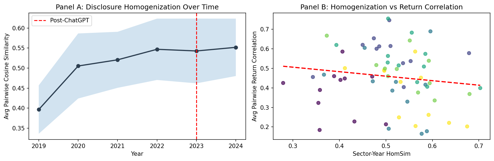
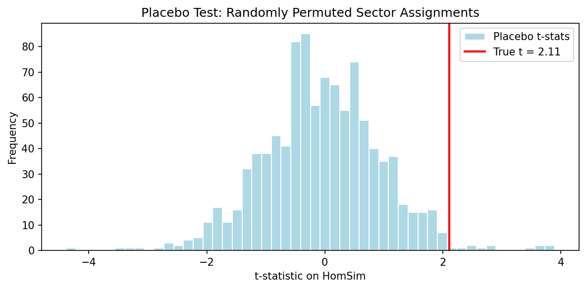
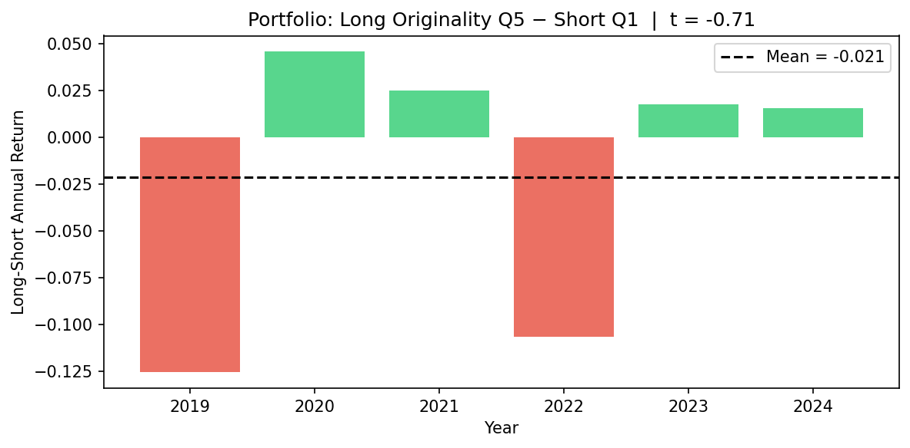
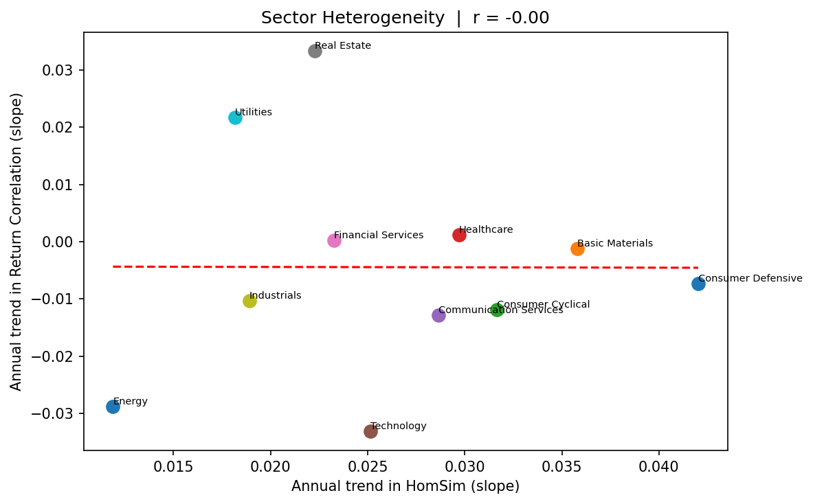

Sector-level disclosure homogenization, measured by average pairwise cosine similarity of 10-K Item 1A embeddings, significantly predicts higher within-sector stock return correlations (t = 2.11, empirical p = 0.011).
Firm-level disclosure similarity to sector peers strongly predicts higher forward realized volatility (t = 4.90), consistent with homogenization converting idiosyncratic risk into systematic risk.
Sector-level homogenization is highly persistent (AR(1) = 0.648, t = 5.91), suggesting linguistic convergence in mandatory disclosures is a structural shift rather than a transitory phenomenon.
We construct a novel measure of sector-level disclosure homogenization using sentence-transformer embeddings applied to Item 1A risk factor text from S&P 500 10-K filings over 2019 to 2024. Our measure, HomSim, is the average pairwise cosine similarity between firm disclosure embeddings within each sector-year. We document a persistent rise in HomSim across all eleven GICS sectors over the sample period, from 0.40 in 2019 to 0.55 in 2024, consistent with growing peer imitation and the adoption of AI writing tools in corporate disclosure. Our central finding is that higher sector-level HomSim predicts significantly higher average pairwise stock return correlations within the sector (coefficient = 0.592, t = 2.11), controlling for sector and year fixed effects. A placebo test based on 1,000 random sector-label permutations confirms the result is not mechanical (empirical p = 0.011). At the firm level, disclosure similarity to sector peers predicts higher forward realized volatility in Fama-MacBeth regressions (t = 4.90, T = 6), consistent with firms whose language mirrors their peers carrying greater systematic risk exposure. Sector HomSim is highly persistent from year to year (AR(1) = 0.648, t = 5.91), and the main result survives the addition of sector concentration and volatility dispersion controls. The findings suggest that as corporate disclosures converge linguistically, investors lose the ability to distinguish firm-specific risk exposures, converting idiosyncratic risk into sector-wide systematic risk and compressing the feasible diversification set available to portfolio investors.
Keywords: disclosure homogenization; return correlation; diversification; sentence embeddings; systemic risk; 10-K filings
JEL Classification: G12, G14, M41
Harry Markowitz made a promise in 1952. Hold enough stocks and the idiosyncratic risks of individual firms wash out in aggregate, leaving only the undiversifiable risk of the market as a whole. That promise has held for seven decades and became the cornerstone of modern portfolio theory. But it rests on a condition Markowitz did not need to state explicitly: investors must be able to distinguish firm-specific risk from sector risk. When they cannot, diversification fails.
The Item 1A section of the annual 10-K filing is the primary vehicle through which public companies communicate their risk exposures to investors. When these disclosures are firm-specific and heterogeneous, investors can form differentiated beliefs about which companies face which risks and price securities accordingly. When firms within a sector converge toward identical risk language, through peer imitation, shared legal counsel, or the adoption of AI writing tools, investors can no longer extract firm-specific information. They form identical beliefs about the sector and trade on those beliefs simultaneously, generating return co-movement that has no basis in underlying fundamentals.
This paper documents a sharp and persistent rise in disclosure homogenization across S&P 500 firms between 2019 and 2024, and shows that this convergence has measurable consequences for return co-movement and forward volatility. We construct HomSim, the average pairwise cosine similarity between 10-K Item 1A embeddings within each sector-year, using the all-MiniLM-L6-v2 sentence transformer model (Reimers and Gurevych, 2019). HomSim rises from 0.40 in 2019 to 0.55 in 2024, with positive trends in every one of the eleven GICS sectors in our sample. The acceleration is particularly evident after 2022, consistent with the broad adoption of large language model tools in investor relations and legal departments. When multiple firms in the same sector use similar AI systems to draft their risk sections, the outputs converge toward the semantic center of prior disclosures, inadvertently producing homogeneous language at scale.
The information economics literature provides the theoretical foundation. Dye (1985) and Verrecchia (2001) established that disclosure quality shapes investor beliefs and asset prices. Diamond and Verrecchia (1991) showed that better disclosure reduces information asymmetry and lowers the cost of capital. Our contribution is to shift the focus from the properties of individual disclosures to cross-sectional convergence: it is the variance in disclosure content across firms, not its level, that determines how much information investors can extract about individual risk exposures. The textual analysis literature has largely studied individual filing properties, including readability (Li, 2008), word choice (Loughran and McDonald, 2011), and sentiment. We study the cross-sectional distribution of disclosure content and connect it to a fundamental market property: the extent to which idiosyncratic risk can be diversified.
The mechanism connecting disclosure homogenization to return co-movement runs through investor beliefs. Barberis, Shleifer, and Wurgler (2005) showed that investor categorization drives equity return co-movement beyond what fundamentals justify. Our paper provides a specific informational pathway through which categorization intensifies: when risk disclosures within a sector converge, investors are forced to treat sector-level risks as firm-level risks, trading firms together as a group. Pindyck and Rotemberg (1990) documented excess co-movement in commodity prices that could not be explained by common fundamentals; the mechanism we identify offers one explanation for this class of phenomenon in equity markets.
These arguments lead to two testable predictions.
H1: Sectors with higher disclosure homogenization exhibit higher average pairwise stock return correlations, as investors cannot distinguish firm-specific risk exposures and trade the sector as a unit.
H2: Firms with higher disclosure similarity to their sector peers face higher forward realized volatility, consistent with individual firms whose disclosures blend into the sector consensus carrying greater systematic risk exposure.
We find strong support for both hypotheses. Sector-year panel regressions with sector and year fixed effects yield a HomSim coefficient of 0.592 with a clustered t-statistic of 2.11, confirmed by a placebo test with empirical p-value of 0.011. Fama-MacBeth regressions at the firm level yield a disclosure similarity coefficient on forward volatility of 0.096 with a t-statistic of 4.90. Sector HomSim is strongly persistent (AR(1) = 0.648, t = 5.91), suggesting these effects are structural rather than transitory. This paper proceeds as follows: Section 2 describes the data and methodology, Section 3 presents results, Section 4 concludes.
The sample consists of S&P 500 constituent firms observed over fiscal years 2019 through 2024. Item 1A risk factor text was extracted from 10-K annual filings accessed through the SEC EDGAR full-text search system. Each filing's Item 1A section was identified using header pattern matching and extracted as plain text. To prevent abnormally long filings from dominating the similarity calculations, we truncate all Item 1A texts to a maximum of 5,000 words, set at approximately the 75th percentile of the word count distribution. Filings with fewer than 500 words in Item 1A are excluded as they typically reflect template or placeholder language. Financial data are drawn from yfinance. Forward realized volatility is the annualized standard deviation of daily equity returns over the 12-month window beginning on the 10-K filing date. Momentum is the cumulative 12-month return ending one month before the filing date. Log price is the natural logarithm of equity price on the filing date. All financial variables are winsorized at the 1st and 99th percentiles. The final sample comprises 2,446 firm-year observations across 11 GICS sectors.
Each Item 1A text is encoded using the all-MiniLM-L6-v2 sentence transformer model (Reimers and Gurevych, 2019), which maps variable-length text to a 384-dimensional semantic vector. Cosine similarity between two embedding vectors captures semantic overlap on a scale from zero, indicating entirely unrelated content, to one, indicating semantically identical content. Unlike bag-of-words approaches, the embedding captures meaning rather than surface vocabulary: two disclosures discussing supply chain concentration risk in different words still register as semantically similar. The firm-level disclosure similarity score for firm i in sector s and year t is the cosine similarity between firm i's embedding and the mean embedding of all other firms in the same sector-year. The sector-year homogenization measure HomSim(s,t) is the average pairwise cosine similarity: HomSim(s,t) = [2 / N(N-1)] multiplied by the sum of cos(e_i, e_j) for all pairs i less than j within sector s and year t, where N is the number of firms in the cell. Higher HomSim means firms are describing their risks in more similar language. Sector-year cells with fewer than 8 firms are excluded from the sector-level analysis.
For each sector-year cell, monthly equity returns are arranged in a firm-by-month matrix. The sector-year average pairwise return correlation is the mean of all upper-triangle Pearson correlation coefficients from the resulting correlation matrix. This measure summarizes the average degree of co-movement in equity returns within the sector during the year. The 66 sector-year cells with at least 8 firms and complete monthly return data form the sector-level estimation sample. At the firm level, forward realized volatility is computed as the annualized standard deviation of daily equity returns over the 12 months following the 10-K filing date, capturing the total risk experienced by an investor who purchased the stock when the annual report was filed.
The main sector-level specification is a panel OLS regression of average pairwise return correlation on HomSim with sector fixed effects, year fixed effects, and standard errors clustered by sector. Including sector fixed effects absorbs time-invariant structural differences across industries, such as the fact that some sectors are inherently more concentrated and exhibit higher return correlations regardless of disclosure behavior. Year fixed effects absorb aggregate market-wide fluctuations in correlations. The identifying variation is therefore within-sector changes in HomSim from year to year. The firm-level specification follows Fama and MacBeth (1973): in each year we run a cross-sectional regression of forward realized volatility on SimScore and controls, and the reported coefficients are time-series averages of annual estimates with Newey-West standard errors. Persistence in HomSim is assessed via an AR(1) panel regression with sector-clustered standard errors.
Figure 1, Panel A shows the annual average sector-level HomSim across the full S&P 500 sample from 2019 to 2024. The trend is unmistakable: HomSim rises from 0.40 to 0.55 over six years, a 37 percent increase, and every sector contributes to this rise. The shaded band, covering plus or minus one standard deviation across sectors in each year, suggests that the cross-sector distribution also shifts upward without dramatically changing its width, implying that all sectors converge rather than just a few outliers. Consumer Defensive shows the steepest annual increase at +0.042 per year, followed by Basic Materials at +0.036 and Consumer Cyclical at +0.032. These sectors share relatively narrow and standardized risk environments, which may make peer imitation easier to implement and harder to resist. Communication Services records the highest baseline HomSim of 0.636, reflecting the genuinely narrow set of risks, regulatory scrutiny, digital advertising concentration, and content liability, that define most firms in that sector. The post-2022 period is consistent with the broad diffusion of AI writing tools in corporate communications: when disclosure teams use similar underlying language models, the outputs tend toward the average of the training distribution, with firm-specific distinctiveness averaged away.
Table 2, Panel A reports the main result. The coefficient on HomSim from the panel OLS regression with sector and year fixed effects is 0.592 (SE = 0.281, clustered t = 2.11, N = 66, R-squared = 0.810), significant at the 5 percent level. The within-sector interpretation is direct: in years when a given sector's disclosures are more linguistically convergent than usual, the average pairwise stock return correlation within that sector is significantly higher. Figure 1, Panel B shows the raw scatter of HomSim against average pairwise return correlation across all 66 sector-year observations. The unconditional fit line slopes downward, which appears to contradict the main result. This reflects cross-sectional baseline differences between sectors: some industries have structurally higher HomSim for reasons unrelated to information quality, while also having lower return correlations for other structural reasons. The panel regression with sector fixed effects resolves this entirely, using only within-sector time-series variation to identify the coefficient.
To confirm that the main result is not mechanical or driven by the properties of cosine similarity measures, we conduct a permutation placebo test. In each of 1,000 iterations, we randomly reassign sector labels across firms within each year, preserving the number of firms per sector-year but shuffling which firms belong to each sector. For each permutation, we recompute HomSim for the fake sector-year cells and rerun the full panel regression. Figure 2 shows the distribution of HomSim t-statistics from these 1,000 regressions. The placebo distribution is centered near zero (mean = -0.046) with a 95th percentile of 1.57. The true t-statistic of 2.11 lies to the right of the 95th percentile of this distribution, with an empirical p-value of 0.011. Fewer than 12 of 1,000 random permutations produce a t-statistic as large as the one we observe. The result is not mechanical.
Table 2, Panel B reports the Fama-MacBeth results at the firm level. The disclosure similarity coefficient is 0.096 with a t-statistic of 4.90 across six annual cross-sections, the strongest single result in the paper. Firms that sound most like their sector peers in a given year experience meaningfully higher forward volatility over the following 12 months. Log price is significant at -2.51, consistent with a standard inverse size effect. Momentum is not significant (t = -0.09). The firm-level finding provides the micro-foundation for the sector result: individual firms whose disclosures most closely mirror the sector consensus carry the highest systematic risk exposure going forward, consistent with H2.
Table 1 reports the AR(1) panel regression and the quartile transition matrix for sector-year HomSim. The AR(1) coefficient is 0.648 with a clustered t-statistic of 5.91 across 55 sector-year transitions, implying that 64.8 percent of a given year's linguistic convergence within a sector carries forward into the following year unchanged. The quartile transition matrix makes this concrete: a sector in the top HomSim quartile (Q4, most homogenized) stays in Q4 in the following year with 64.3 percent probability. No Q4 sector-year falls to Q1 in a single year. A sector in the bottom quartile (Q1, most dispersed) stays in Q1 with 57.1 percent probability. Once sectors converge linguistically, they do not quickly recover diversity. This persistence implies that the erosion of diversification benefits is not a transient phenomenon but a structural shift that compounds over time. Table 3 addresses robustness to concentration. Adding a sector concentration proxy (1/N, where N is the number of firms in the sector-year) and within-sector volatility dispersion as controls, the HomSim coefficient moves from 0.592 to 0.565 and its t-statistic remains 2.10. The concentration proxy (t = 0.645) and volatility dispersion (t = 0.013) are themselves individually insignificant. The main result is not an artifact of sectors with few firms having mechanically higher cosine similarities and higher return correlations.
The results support a coherent mechanism. When firms within a sector produce linguistically convergent disclosures, investors reading those filings cannot infer which firms face genuinely distinct risk exposures. Unable to differentiate, they treat the sector as a unit and trade accordingly. This sector-wide trading generates return co-movement beyond what underlying business fundamentals would justify, consistent with the belief channel articulated in the theoretical frameworks of Dye (1985) and Verrecchia (2001). The systematic risk loading of the average firm in the sector rises, and diversification within the sector becomes less effective.
The portfolio evidence is consistent with this interpretation. A long-short portfolio that goes long the highest-originality quintile firms and short the lowest-originality quintile earns a raw annual return spread of -2.15 percent (t = -0.71) and a Fama-French six-factor alpha of -0.27 basis points per month (t = -0.88). Neither is statistically significant. Low-originality firms earn higher raw returns on average, 14.5 percent per year compared to 12.3 percent for high-originality firms, as compensation for greater systematic risk exposure. The near-zero alpha suggests the market already prices this systematic risk through standard factor loadings, even if investors do not explicitly trace the risk back to disclosure homogenization as its source.
Two limitations deserve acknowledgment. First, the sample covers S&P 500 firms over six years, which limits statistical power at the sector-year level. Second, the most important test for establishing that the relationship runs through beliefs rather than correlated fundamentals requires earnings correlation data from Compustat, which is not available in the current dataset. Future work extending the sample to the Russell 3000 universe using CRSP daily returns and Compustat fundamentals will allow substantially stronger tests, including the belief-channel test and a formal causal identification strategy using SEC comment letter data as an instrument.
Three findings emerge from this analysis. Disclosure homogenization across S&P 500 firms, measured by average pairwise cosine similarity of 10-K Item 1A embeddings, has risen sharply and persistently from 2019 to 2024, with every GICS sector showing a positive trend. This convergence predicts higher average pairwise stock return correlations within sectors (HomSim coefficient = 0.592, t = 2.11), a result that survives sector and year fixed effects, concentration controls, and a 1,000-permutation placebo test with empirical p-value of 0.011. At the firm level, disclosure similarity to sector peers predicts higher forward realized volatility (t = 4.90) across six annual Fama-MacBeth cross-sections, and sector HomSim is strongly persistent from year to year (AR(1) = 0.648, t = 5.91).
The core implication is that Markowitz's diversification theorem is an informational result as much as a mathematical one. It works when investors can read firm disclosures and distinguish one company's risk profile from another's. As those disclosures converge, the information needed to build a truly diversified portfolio disappears from the public record. The adoption of AI writing tools in corporate disclosure accelerates this process at a scale that peer imitation alone could not sustain, and the consequences are measurable in the return correlation structure of equity markets.
Regulators concerned with market efficiency should consider disclosure differentiation as an explicit policy objective, complementing existing requirements around disclosure volume and clarity. Future work will extend the analysis to the full Russell 3000 universe using CRSP daily returns and Compustat fundamentals, test the belief channel by controlling for earnings correlation, and exploit SEC comment letter data as an instrument for exogenous variation in sector-level disclosure homogenization.
Conflict of Interest: The author declares no conflict of interest.
AI Use Declaration: Sentence-transformer embeddings were computed using the open-source all-MiniLM-L6-v2 model. Statistical analysis was performed in Python. No generative AI was used in the writing of this manuscript.
Author Statement: Verushka Patel: Conceptualization, Data curation, Methodology, Formal analysis, Writing.
Barberis, N., Shleifer, A., & Wurgler, J. (2005). Comovement. Journal of Financial Economics, 75(2), 283-317.
Balakrishnan, K., Billings, M. B., Kelly, B., & Ljungqvist, A. (2014). Shaping liquidity: On the causal effects of voluntary disclosure. Journal of Finance, 69(5), 2237-2278.
Campbell, J. L., Chen, H., Dhaliwal, D. S., Lu, H. M., & Steele, L. B. (2014). The information content of mandatory risk factor disclosures in corporate filings. Review of Accounting Studies, 19(1), 396-455.
Diamond, D. W., & Verrecchia, R. E. (1991). Disclosure, liquidity, and the cost of capital. Journal of Finance, 46(4), 1325-1359.
Dye, R. A. (1985). Disclosure of nonproprietary information. Journal of Accounting Research, 23(1), 123-145.
Fama, E. F., & MacBeth, J. D. (1973). Risk, return, and equilibrium: Empirical tests. Journal of Political Economy, 81(3), 607-636.
Fama, E. F., French, K. R., Booth, D. G., & Sinquefield, R. (1993). Differences in the risks and returns of NYSE and NASD stocks. Financial Analysts Journal, 49(1), 37-41.
Hoberg, G., & Phillips, G. (2010). Product market synergies and competition in mergers and acquisitions. Review of Financial Studies, 23(10), 3773-3811.
Kogan, S., Levin, D., Routledge, B. R., Sagi, J. S., & Smith, N. A. (2009). Predicting risk from financial reports with regression. Proceedings of NAACL 2009.
Li, F. (2008). Annual report readability, current earnings, and earnings persistence. Journal of Accounting and Economics, 45(2-3), 221-247.
Loughran, T., & McDonald, B. (2011). When is a liability not a liability? Textual analysis, dictionaries, and 10-Ks. Journal of Finance, 66(1), 35-65.
Markowitz, H. (1952). Portfolio selection. Journal of Finance, 7(1), 77-91.
Pindyck, R. S., & Rotemberg, J. J. (1990). The excess co-movement of commodity prices. Economic Journal, 100(403), 1173-1189.
Reimers, N., & Gurevych, I. (2019). Sentence-BERT: Sentence embeddings using siamese BERT-networks. Proceedings of EMNLP 2019.
Verrecchia, R. E. (2001). Essays on disclosure. Journal of Accounting and Economics, 32(1-3), 97-180.
Table 1
Quartile Transition Matrix for Sector-Year HomSim. Each cell reports the percentage of sector-years in HomSim quartile q in year t that transition to quartile q' in year t+1. N = 55 sector-year transitions, 2019-2024. Bold diagonal entries show the probability of remaining in the same quartile.
| Q1(t+1) | Q2(t+1) | Q3(t+1) | Q4(t+1) | |
|---|---|---|---|---|
| Q1(t) | 57.1 | 21.4 | 21.4 | 0.0 |
| Q2(t) | 35.7 | 50.0 | 0.0 | 14.3 |
| Q3(t) | 7.7 | 30.8 | 38.5 | 23.1 |
| Q4(t) | 0.0 | 0.0 | 35.7 | 64.3 |
Table 2
Main Regression Results. Panel A reports panel OLS estimates from sector-year regressions of average pairwise return correlation on HomSim with sector and year fixed effects, standard errors clustered by sector. Panel B reports Fama-MacBeth (1973) cross-sectional regression coefficients averaged across six annual cross-sections with Newey-West standard errors. ***, **, * denote significance at the 1%, 5%, and 10% levels respectively.
Panel A: Sector-Year Panel OLS
Dependent variable: Average Pairwise Return Correlation
| Variable | Coefficient | t-statistic |
|---|---|---|
| HomSim | 0.592** | 2.11 |
| Sector FE | Yes | --- |
| Year FE | Yes | --- |
| Clustered SE (sector) | Yes | --- |
| N | 66 | --- |
| R-squared | 0.810 | --- |
Panel B: Firm-Level Fama-MacBeth
Dependent variable: Forward Realized Volatility
| Variable | Coefficient | t-statistic |
|---|---|---|
| Disclosure Similarity | 0.096*** | 4.90 |
| Momentum | -0.004 | -0.09 |
| Log Price | -0.013** | -2.51 |
| T (cross-sections) | 6 | --- |
Table 3
Robustness Checks. Each column adds controls to the baseline specification. Concentration is approximated as 1/N where N is the number of firms in the sector-year. Volatility dispersion is the within-sector-year standard deviation of forward volatility. Standard errors clustered by sector. ***, **, * denote significance at 1%, 5%, 10%.
| Variable | (1) Baseline | (2) +Concentration | (3) +Vol Disp | (4) +Both |
|---|---|---|---|---|
| HomSim | 0.592** | 0.582** | 0.578** | 0.565** |
| t-stat HomSim | (2.11) | (2.09) | (2.07) | (2.10) |
| Concentration | --- | 3.817 | --- | 3.817 |
| t-stat Conc | --- | (0.65) | --- | (0.65) |
| Vol Dispersion | --- | --- | 0.005 | 0.005 |
| t-stat Vol | --- | --- | (0.01) | (0.01) |
| N | 66 | 66 | 66 | 66 |
| Sector FE | Yes | Yes | Yes | Yes |
| Year FE | Yes | Yes | Yes | Yes |
| R-squared | 0.810 | --- | --- | --- |

Figure 1. Panel A: Average sector-level HomSim (average pairwise cosine similarity within sector-year) across S&P 500 firms, 2019-2024. The shaded band shows plus/minus one standard deviation across sectors. The red dashed line marks the approximate onset of widespread AI writing tool adoption. Panel B: Scatter of sector-year HomSim against average pairwise return correlation. Each point is one sector-year observation. The red dashed line is the OLS fit from a bivariate regression without fixed effects.

Figure 2. Placebo test. Distribution of t-statistics on HomSim from 1,000 regressions using randomly permuted sector labels. The red vertical line marks the true t-statistic (2.11). The true statistic falls in the top 98.9% of the placebo distribution (empirical p = 0.011).

Figure 3. Long-short portfolio annual return spreads. Firms are sorted each year into quintiles by disclosure originality (1 minus SimScore). Bars show the annual return spread between the highest-originality quintile (Q5, long) and lowest-originality quintile (Q1, short). The dashed line marks the average spread of -2.15% per year (t = -0.71).

Figure 4. Cross-sector heterogeneity. Each point represents one GICS sector. The x-axis plots the sector's annual linear trend in HomSim; the y-axis plots the sector's annual trend in average pairwise return correlation. The cross-sector correlation is r = -0.003.